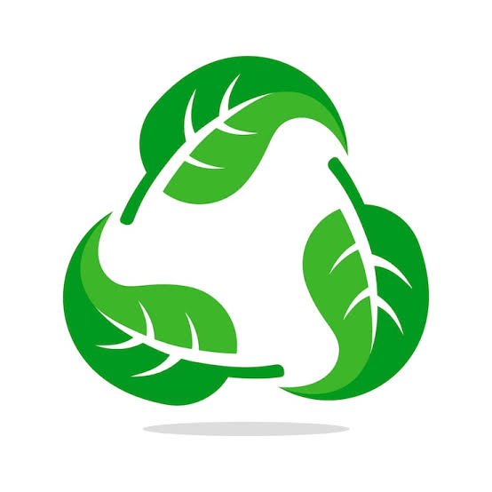
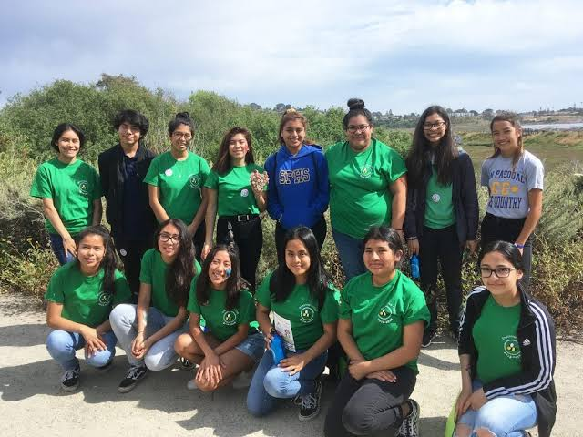
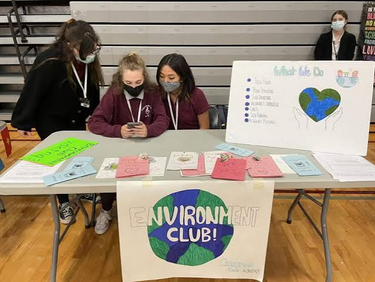
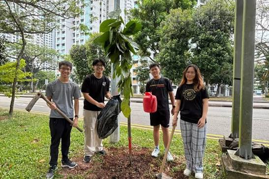

A student or community group dedicated to protecting nature, raising ecological awareness, and promoting sustainable daily habits
Members organize regular events to remove litter from school grounds, local parks, and nearby beaches. These events directly improve local habitats and prevent pollution from reaching ecosystems. Facilitated by Ms. Paredez


